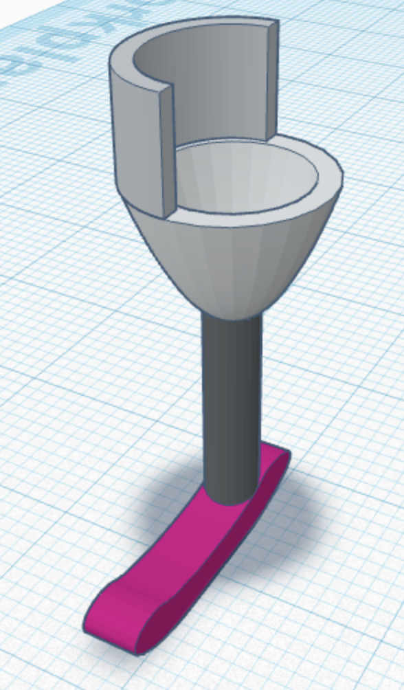
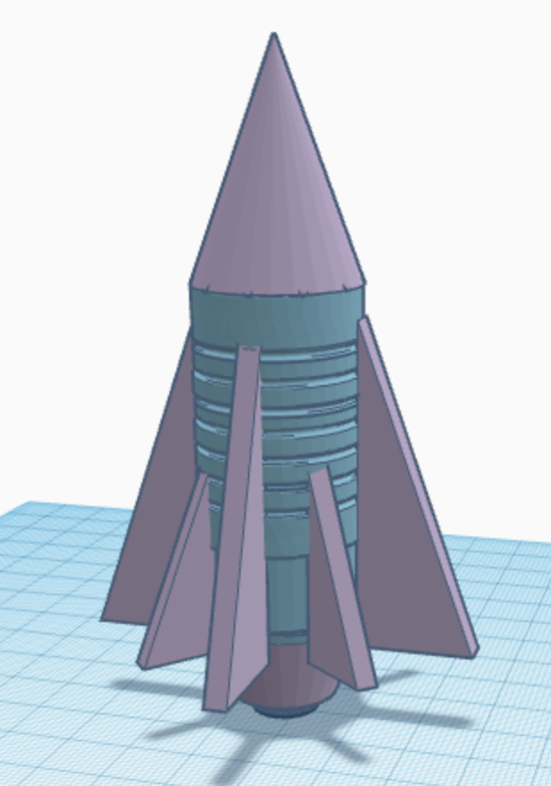
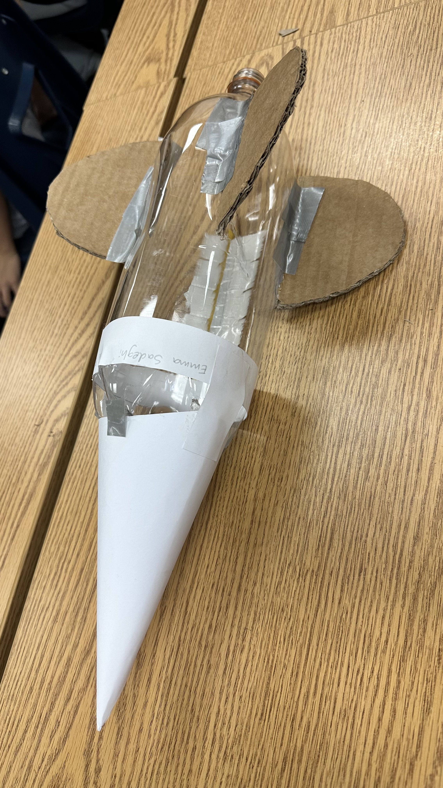
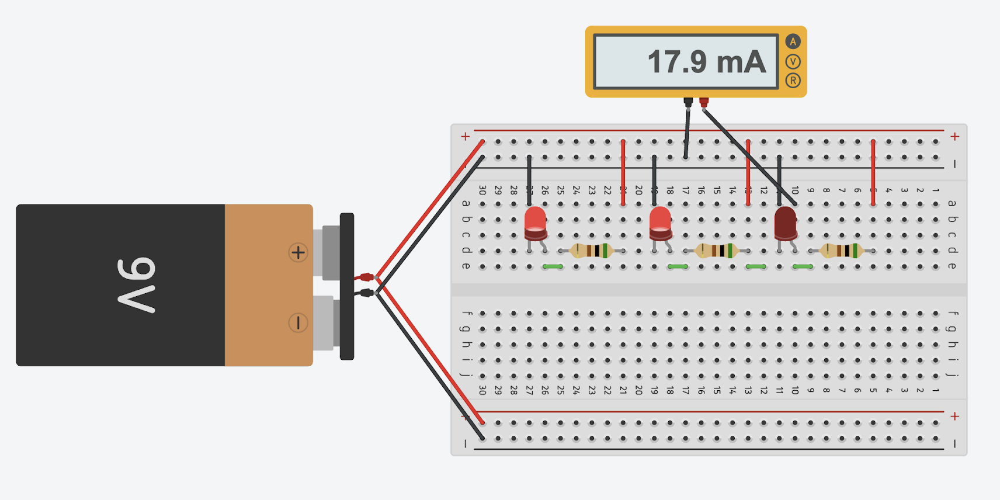

My name is Emma Sadeghi and I'm a junior at Crescenta Valley High School. This is my website for my Intro to Engineering course!
This website will document everyting I learn, build, and experience throughout the year, on a weekly basis! Hope you enjoy! :)
Engineering: Week 1
8/21-8/25:
This was my first week in Intro to Engineering!
During our lectures this week, we learned about the engineering process and saftey and etiquette in the engineering environment.
The engineering process is similar to the scientific process, but much more detailed. The process involves 7 steps which can be
utilized in a feed back loop to design and continually improve projects we do in class. Though larger engineering industries use
this process to find solutions to large scale issues. Our safety and etiquette lecture focused on proper ways to use materials in
the classroom to ensure the safety of yourself and others. It also touched on the safety requirements of large engineering companies,
which are much stricter on safety due to having larger scale projects. To end the week we had our first challenge! The class was split
into two large groups and tasked to roll a marble across the school quad and into a small bucket, using only a few halves of PVC pipes.
We weren't allowed to touch the marble while on the trail, overlap the pipes, or move the ball backwards. Our team immediatley came up
with a plan to line up the pipes and run to the end of the line while the ball rolls. After a few failed trials, and some more
communication among our team, we made it to the bucket!! Well, sort of. We didn't actually get the marble inside the bucket, but at
least we made it to the end. I really enjoyed my first week in this class, and am excited for the rest of the year! :)
(An example of the marble run challenge we did)
Engineering: Week 2
8/28-9/1:
This week and engineering we learned about mechanical engineering and all the different jobs and components that make up the branch.
I learned that mechanical engineering is the most broad of all different engineering branches, making it a convenient field to get
a degree in because of the variety of job opportunies. We also started to deisgn 3D models on Tinkercad, specifically for our
upcoming Rube Goldberg projects. The goal of the project is to get a baseball to pop a balloon after going through multiple simple
machines (such as a pulley, incline, lever, etc.). It has been a bit difficult getting used to the world of Tinkercad, but I am enjoying
the learning curve. Our challenge this week also involved Tinkercad. We were asked to build a realistic home appliance using basic shapes
only, and I picked a toaster with a sandwhich. I think I did pretty good for one of my first builds, but I believe I will be able to
improve its realism the more I familiarize myself with Tinkercad. All in all, it was a good week with new experiences.
Excited to see what next week holds! :)
(The toaster I built buring our Tinkercad challenge.)
Engineering: Week 3
9/4-9/8:
This week was a short but eventful week! We began our week learning more about mechanical enginnering and watched a crash course on the
beginnings of mechanical engineering. The most signifigant thing I learned about was how mechanical engineers were the minds behind many
of the first tools, locomotives, and engines. We then continued to CAD (another thing I learned this week; basically using comupter technology
to create design documentation) our Rube Goldberg designes on Tinkercad. And to end the week we began to physically create our projects based on
CAD. We don't have much to show yet, but we started to cut out our pieces out of cardboard. Our next step would be combining all our pieces
to create the base of the course, before adding the finishing details. Hopefully we will finish our project soon and our tests will be
successful.
(The CAD of our Rube Goldberg project)
Engineering: Week 4
9/11-9/15:
Rube Goldberg Week! We spent all our class time this week working on building, testing, and improving upon our projects. The goal of the project was
to start with a baseball and create a machine which resulted in the popping of a balloon. We had limited supplies, and had to incorporate 3 of the 6
simple machines. My team built an inclined plane, lever, and car out of cardboard as our machines. All 3 machines worked in conjunction to maneuver
the ball through our structure and resulted in the balloon popping. Although we were successful in the end, we did face some issues with our design.
We initially hoped to incorporate a pulley into our project, but could not due to time constrains. Then we faced an issue with the car and needle; the
car would roll into the balloon but didn't pop it. Thus we made some adjustments, and ultimatley popped it! This project was a bit frustrating, but fun
nonetheless!
(Our final project. Red arrows represent the path of the baseball, Green arrow represents
path of the car. Yellow lines show the needle, wheels, and tape that will be released by the
lever.)
Engineering: Week 5
9/18-9/22:
We started our lessons with 2 challenges. For the first one, we were tasked with creating a flotation device that can
hold weight for 5 minutes, using only a singular piece of paper. Though, my device only held 64grams for about 30 seconds.
If given more time, I definitely believe my design could've been better. Our second challenge was to draw a capital letter
"E" with dimensions that somebody else would be responsible for cutting out. This really helped me focus on being clear and
detailed when providing instructions. I think my design was great, and I put a lot of thought into it. Finally, we wrapped
up the week with a lesson on computer engineering, with focuses on computer science and electronic engineering. I enjoyed
this weeks challenges and am excited for more!
Engineering: Week 6
9/25-9/29:
This week we learned about the different parts of a computer and their fuctions within its system. And after learning
about each component, we got to dissect an old PC and physically look at all the pieces. It was actually a bit harder
than I expected. We came across some missing pieces and random wires that confused us when disassembling the computer
but we were able to work around them and successfully disscet the entire computer. Our last task was to put it back
together exactly how it was at the beginning. It was very cool getting to actually see the things we learn about, I
enjoyed this activity alot.
(The before and after of our dissection)
Engineering: Week 7
10/2-10/6:
This week we learned about the field of biological engineering (aka bioengineering). It's a very complex field as it
integrates many other engineering fields and disciplines. A real life example of bioengineering are medical prosthetics
for missing organs, limbs, etc. We saw an example of an artificial heart made of silicone that actually pumps blood, but
it is still in testing for long term use. We then got to create our own prostetic hand out of cardboard and string; our
goal was to pick up a water bottle with our prosthetic. We faced some issues with our initial design that we only realized
while testing, so we went back to our design and adjusted it. After a few changes to our design and lot os testing we were
successful! We also did another prostetic challenge on Tinkercad where we designed a prostethic for a specific animal. I chose
to do a prosthetic leg for a dog, and I took inspiration from prostetic legs made for olympic sprinters. This would allow the
dog to run around and be active without issues.

(My Tinkercad of a prosthetic leg for a dog, and a video of our prosthetic hand.)
Engineering: Week 8
10/9-10/13:
This week in engineering we learned abour aerospace engineering! The field focues primarily on spaceships and their
manufacturing, which is extremely cool in my opinion. Our project for this field will be making a rocket out of a plastic
bottle; that we will launch by pressurizing it. I began to CAD my idea on Tinkercad, but right now it's fairly simple.
I want to craft the rocket so its feature will help it push through the air and travel as far as possible. I plan to improve
design and brainstorm other ideas with my team before we begin building and testing.

(My current Tinkercad of my bottle rocket)
Engineering: Week 9
10/16-10/20:
This week in engineering we built and tested our own bottle rockets. My partner and I designed our rocket with a set of wind and
cone top, in order to break through the air. Our design ws fairly simple, but it was practical and effective for our needs.
For our test we decided to fill our bottle with abour 35% water, and around 50PSIs of pressure. Our test was semi-successful. The
rocket travelled quite far but did spiral and turn sharply left instead of flying straight. If we were to alter our design, I would
add more components to the bottle that would balance out the plane and prevent it from redirecting its course. For the time and
we had I would say we had a successful project!

(A picture of our rocket and a video of our launch.)
Engineering: Week 10
10/23-10/27:
This week we learned about environmental engineers. Their jobs is to ensure the enviornment around us is sustainable enough to
support humans. Some of the tasks they deal with is water treatment, disposal of wastes, and pollution, but there a surplus of
other tasks to solve environmental issues across our land, water, and air. For our environmental project we were tasked to create
a water filter using an empty bottle and various earthy resources. In my design, I layered cotton balls, sand, small pebbles, and
large rocks, to help filter out the water by removing the larger contaminents, then removing the progessively smaller ones. After
passing the dirty water through the filter about 7 times, the water got progessively and signifigntly clearer with every filtration.
I would say it was successful, but if I were to do it again I would have cleaned my filter between each filtration to avoid older
contaminents interfering with the now filtered water.
(My filtration device.)
Engineering: Week 11
10/30-11/3:
This week we learned about electrical engineering. Electrical engineers focus on designing, studying, and using various eletrical
and appliances. We also learned about Ohm's law which allowed us to calculate voltage, current, resistance, and power of an applicance,
depending on different circumstances, using math. We then began to learn how to work with our own circuits through Tinkercad. We created
three different circuite which used a battery to power a LED light. It got increasingly difficult with each circuit as the placement of the
lights changed and more connections were needed to power them. However after lots of trial and error, I completed all the circuits successfully!

(One of the cirucits I made on Tinkercad.)
Engineering: Week 12
10/30-11/3:
This week we strated to work with physical breadboard. We were assigned different patters to recreate with LEd lights through the use of
an arduino. Within the ardunio interface we were required to code our patterns digitally and then connect our code to our board to activate
our LED's. I encounted many issues with both the coding and our board setup. It was quite hard to find the correct placement of wire to
ensure all the LED would act as wanted. The code itself also presented challenges as it was my first time coding something of this sort.
However, in the end I was able to successfully code and execute all the patterns!
Engineering: Week 13
10/30-11/3:
This week we learned about buisness engineering. These engineers utilize consumer needs to design and market products to audiences with
the intention of solving current issues. For our buisness engineering project, we will be creating a product and pitching it--similar to
Shark Tank. We have just started the brainstorming process and have yet to finalize our product. Currently we intent to creat a self-dispening
pill bottle which aids older demographics by reminidng them to take their meds by emitting noise, and prevents overdoses by regulating the number
of pills dispensed. We may change our idea in the future but this is simply our current idea.
(Pill bottle idea.)
Engineering: Week 14
10/30-11/3:
This week we continued to work on and present our Shark Tank product pitch. My group and I decided to create and app that automatically finds and
matches students to scholarships, internships, and volunteer opportunies related to their major of interest. The app also assist students better their
transcripts to stand out among your peers, while also preparing them for what their major may entail. The other groups has some cool ideas aswell, my
was a wireless measuring tool to create a hassle free, effective replacement for traditional measuring tapes. All the other ideas were ery unique and
most semeed feasible and helpful!
(One of our app's interfaces)
Engineering: Week 15
Bridge Analysis
1. What was the weight of your bridge?
70 grams
2.What was the weight held by your bridge?
3408 grams
3. What was the ratio of weight of bridge to weight held?
49 grams of weight per gram on bridge
4. What was the heaviest part of your bridge? What contributed most to the weight?
The base of our bridge was the heaviest as it had the most spaghetti. It also had quite a lot of glue to keep secure and thus added onto the weight of the
spaghetti. However, it was the most structurally sound part of the bridge and contributed heavily to our bridges success.
5. Where did the design of your bridge come from? Inspiration? Research?
6. Did the design work as intended? Better? Worse?
7. What was the point of failure of your bridge? Was that the expected weakest point?
8. What can you do to improve your bridge? What can prolong points of failure?
9. Post building progress photos of your bridge
10. Post photos of before your bridge
11. Post a video of your bridge
SEMESTER 2
Engineering: S2 Week 1
1/8-1/12:
During our first week of the semester we learned about chemical engineering! It's a very interesting branch that deals with chemical entitys of various
types. It's a very large branch of engineering with lots of sub-catergories of engineers. We also experimented with our own chemical engineering project.
by trying to make oobleck. It's an interensint substance that's matter fluctuates between a liquid and solid depending on the force upon it. It was really
fun to make and interesting to play with due to its changing form. This week's lesson was very insteresting, chemical engineering is a definitely field I may
look into for the future.
(Our oobleck)
Engineering: S2 Week 2
1/15-1/19:
This week we started a new project; mouse trap cars! We began our initial research and design process by looking up optimal designs for our car. We referred to
multiple sources and videos to determine what shapes and structures will increase our cars chances at success. We currently have a simple design that will reduce
the cars weight and hopefully maximize its travelling distance. Though, we plan to add on to our design as needed to to ensure our car moves smoothly and effectively
We created a project proposal for our car in which we described our intention in building the car as well as a BOM of all our necessary materials.
Engineering: S2 Week 3
1/22-1/26:
This week we took a lesson on the math and calculations that would help us optimize our cars travelling distance. The lesson was very beneficial in giving
us an estimate of our car's potential. We used the math to scale the dimensions of our mouse trap car. According to our estimate, if created effecitvely,
our car should travel 70ft. We used our new scaled deisg to create our car on TinkerCAD, giving us a visual of our cars final design. Next week we will
begin the building process, specifically I hope to complete the base of our car so we have ample time to alter our design if needed.